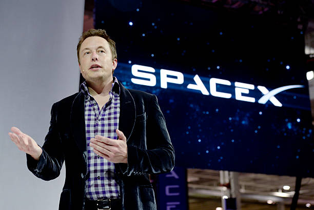

SpaceX começará a lançar o terceiro dos cinco "grupos" orbitais da primeira geração de satélites Starlink em 5 de julho, a julgar por um recente relatório publicado pela Comissão Federal de Comunicações dos EUA em 26 de maio.
Os grupos são diferenciados por duas características: primeiro a inclinação orbital, isto é, o ângulo da órbita em relação ao equador; e depois, a altitude orbital, ou seja, a distância do grupo em relação ao solo. Pelo menos 72% dos satélites de primeira geração fazem parte dos dois primeiros grupos.
A Space Exploration Technologies Corp., ou SpaceX, foi fundada em 2002, nos Estados Unidos, por Elon Musk. Hoje, a companhia é uma das principais empresas privadas de serviços de transporte espacial do mudo.
Nascida com a missão de revolucionar a tecnologia espacial, a SpaceX projeta, fabrica e lança foguetes que, atualmente, entregam cargas na órbita terrestre. Apesar disso, o foco principal da companhia é permitir que as pessoas possam habitar outros planetas.